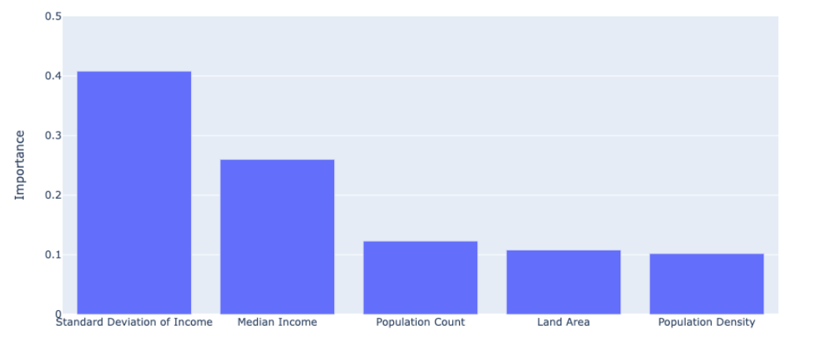
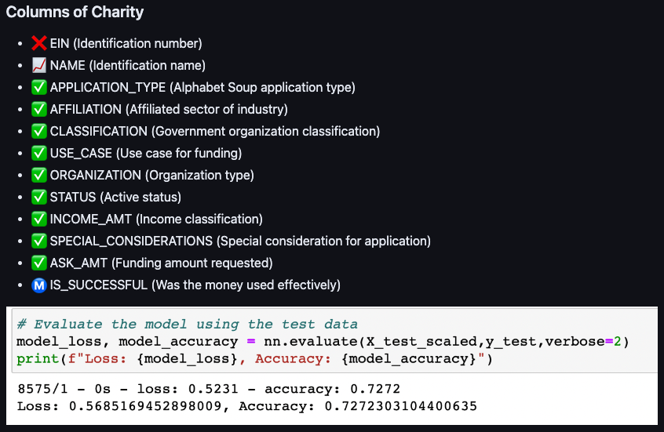
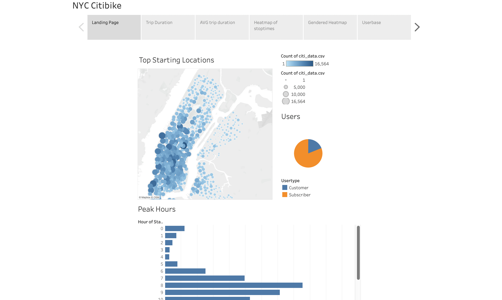
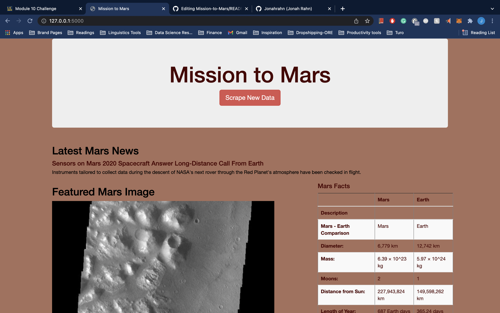
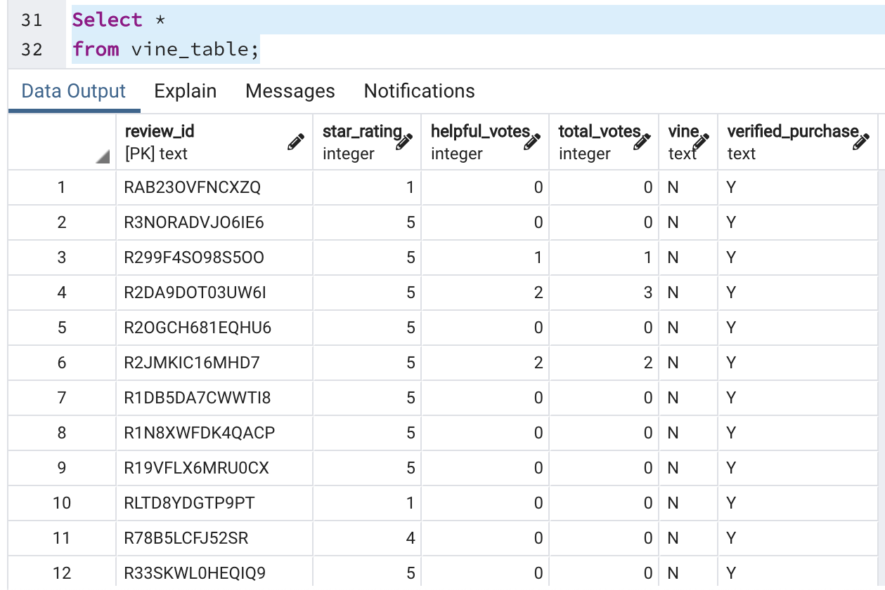
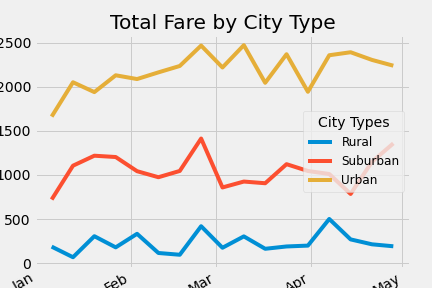

DATA
ANALYSIS
Python · SQL · JavaScript · R · HTML · AWS · Tableau · Spark · Google Suite/Colab · Flask · CSS · Big Data Processing · Google Dialogflow · JSON.

A passionate engineering linguist unraveling the mysteries of human language & applying that knowledge to cutting-edge technology.
From a Linguistics B.A. at the University of California, Santa Cruz to optimizing ML models at LinkedIn — I bridge the gap between human communication and machine intelligence.
Python · SQL · JavaScript · R · HTML · AWS · Tableau · Spark · Google Suite/Colab · Flask · CSS · Big Data Processing · Google Dialogflow · JSON.
Syntax · Python · Language Data Processing · Computational Linguistics · Phonetics (Praat) · Semantics · Translation · Phonology · Annotation.
TensorFlow · Keras · Neural Networks · Machine Learning · Natural Language Processing · Deep Learning · Reinforcement Learning · PyTorch.
Machine learning model predicting mental health risk factors. Data preprocessing, feature engineering, model selection, evaluation.

Neural network model analyzing the success rates of charity campaigns. Built with TensorFlow + Keras.

Interactive Tableau visualization exploring Citi Bike data for insights into user behavior and usage patterns.

Python, Splinter, Flask, Mongo & Beautiful Soup. A webpage that aggregates scraped data from multiple sites.

Analyzing Amazon product reviews in the Automotive section for bias.

Ride-share analytics modeled after Uber data.
